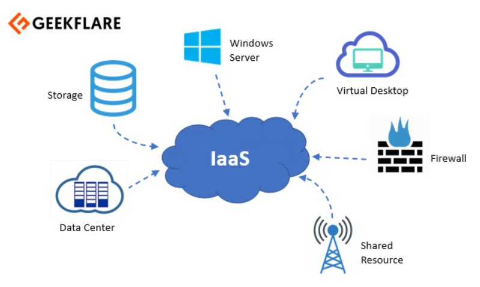

Plataforma como Servicio (IaaS)
El modelo de servicio IaaS (Infraestructura como Servicio) ofrece al consumidor recursos de computación fundamentales como procesamiento, almacenamiento y redes, permitiendo el despliegue y ejecución de software, sistemas operativos y aplicaciones. Aunque el consumidor no gestiona la infraestructura subyacente, controla los sistemas operativos, almacenamiento y aplicaciones implementadas, con un control limitado sobre algunos componentes de red.
Ejemplos de PaaS:
- Copia de seguridad y recuperación
- Redes de distribución de contenido (CDN)
- Gestión de servicios
- Servicios tecnológicos de Internet de las cosas
- Almacenamiento
